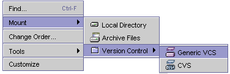
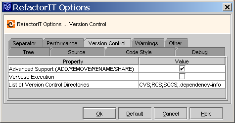

RefactorIT is capable of issuing VCS specific commands during actions that change file structures. In order to use this capability, the VCS file system should be mounted as a "Generic VCS." The only officially supported VCS system is
CVS.

Please verify that all the commands of the VCS are functional before running any RefactorIT refactoring on a VCS file system. Refer to the Troubleshooting section if you encounter any difficulties.
You might find it useful to configure specific VCS support options of RefactorIT before first use and these options are located under the RefactorIT Options/Version Control tab.

Advanced Support (ADD/REMOVE/RENAME/SHARE) - With this option disabled, RefactorIT will be able to call GET, CHECKOUT and EDIT commands hen it needs to edit a read-only file or a file that has not been received . If you want RefactorIT to support the full range of VCS commands available, you should enable this option. This option is enabled by default.
Verbose Execution - When enabled, all the VCS actions behave as if invoked manually through the Sun ONE Studio IDE, and they show configuration dialogs and confirmation messages. When this option is disabled, RefactorIT tries to keep the operation as silent as possible. During complex operations (Move Class) the number of commands called is significant, hence it is worthwhile to disabled this option unless you need to debug some questionable behaviour of RefactorIT. This option is disabled by default.
List Of Version Controlled Directories RefactorIT can bypass some folders in the source tree that are meant to be used by version control utilities only. For example, it can bypass folders called "CVS", "RCS", etc.
read-only files - RefactorIT will issue an EDIT command before editing such files. NOTE: this behaviour of RefactorIT cannot be switched off.
rename - If you rename a class and its file should be renamed, the old file will be removed by the "REMOVE" command and the new file will be added by "ADD".
move - If the directory structure changes (e.g. "Move Class," "Rename Package") directories will be added or removed as needed by the "ADD" and "REMOVE" commands.
To be conservative, RefactorIT doesn't commit the changes made so that you can recover the previous VCS state if wish to reverse the selected refactoring. To commit, invoke the "Commit" command from the "Versioning" menu of NetBeans.